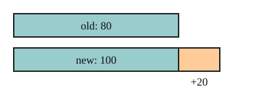

Part of Percent Change. Answer in the chat (1: ..., g: c), add sure or guess after any answer, and say done when finished.
Last time: a price goes from 80 to 100. By what percent did it rise? You said a) 20%. It is b) 25%.

A rise of 20 means a lot on a price of 80 and little on a price of 8000. To compare changes, measure each against where it started (notes 4):
percent change = (new - old) / old × 100
A negative result is a decrease (notes 3).
Q1. A bike's price goes from 250 to 300. What is the percent increase?
(300 - 250) / 250 = 50 / 250 = 0.25, so 25% (sure)
Q2. A town shrinks from 800 to 600 people. What is the percent change?
(600 - 800) / 800 = -200 / 800 = -0.25, so -25% (sure)
Q3. In your own words: why do you divide by the old value and not the new one?
A coat's price rose 25% to 100. What was the price before?
a (guess)